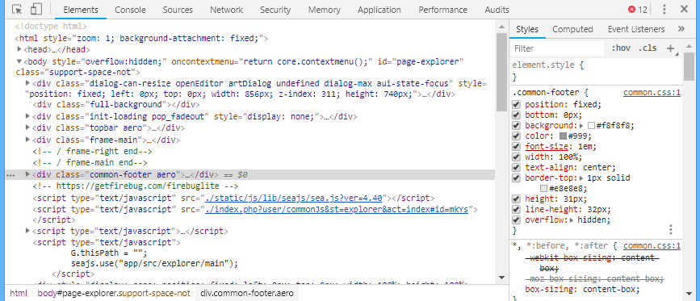
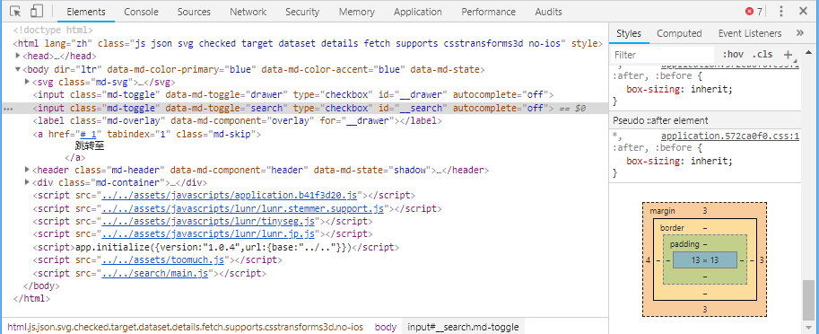
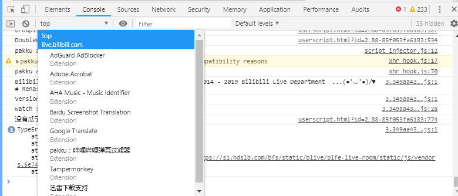
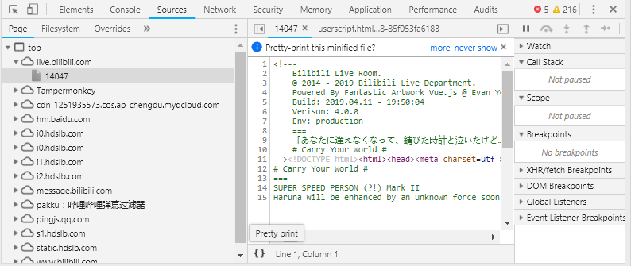
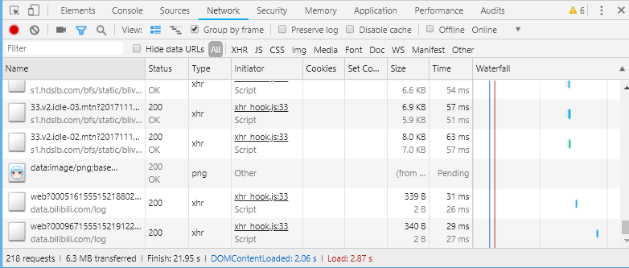
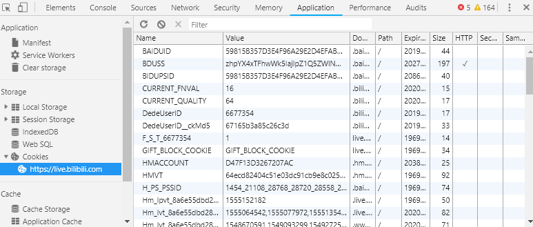

跳转至
浏览器相关
浏览器控制台
- 浏览器比较重要的一个东西就是控制台，一般我们按
F12或右键-审查元素就可以打开
- 浏览器控制台主要有以下几个部分（顺序不一定，是可以按住拖来拖去的）
- Element：HTML元素（解析完成后的，即：你看到什么就是什么，不完全登陆HTML源码）
- Console：Js控制台
- Source：源文件
- Network：网络
- Security：安全设置
- Memory：内存
- Application：应用和存储
- 等
- 在选择框左边有两个按钮，是
- 选择元素（先点击按钮，再点击页面上元素，就会在
Element上高亮显示）
- 设备界面（改变
UserAgent，一般用于测试手机页面等）
- 最右边三个点可以点开，有
Dock Side可以选择控制台的显示位置，可以在左、下、右或者弹出都可以
- 注意：下列正则表达式不需要感觉很高级，普通的文本也属于正则表达式，比如
hdsdb
Element
- 解析之后的HTML元素
- 
- 我们可以在左边很简单的看到解析后到的HTML元素，也可以使用
Ctrl+F搜索
- 可以进行编辑，修改，复制等操作，但是到不会保存，刷新就会消失，一般用于临时测试效果，然后复制到编辑页面
- 选中后右键可以修改伪类（
Focus State），如:hover，可以方便地测试代码
- 在右边可以看到该元素的
Style
- 鼠标放上去可以看到左边有个复选框，选中代表了应用，可以点击，取消选中后可以看到他被划掉了
- 比较上方的是到优先级到较高的，在下方的是优先级较低的，
- 在下方的也有时从父级元素到继承到的，可以发现有
inhert from xxx字样
- 在下方的元素也有被划掉的，但是他并没有被取消，那是为什么呢？是因为上方有到覆盖到他的数据，所以他被覆盖掉了
- 浏览器到预设样式到：
user agent stylesheet，在相同位置，我们也可以看到相同位置有到css来源
- 
- 到
Style的最下面，我们可以看到Box
Box中可以直观看到padding，margin，border
Console
- 
- 浏览器JS控制台
- 可以看到
Top，点进去可以选择执行JS代码的页面，其中有各插件和iFrame
Top左边有两个按钮，是
- 右边有条目，可以使用正则表达式筛选输出
- 在下面可以直接输入JS代码，进行执行
Object、Array等数据类型可以直接右键保存到全局变量- 右键可以清空或保存缓存数据
Source
- 
- 查看获得的源文件
- 文件左下角有一个
{}按钮，可以对代码进行格式化，格式化后原本跳转也会直接跳转到格式化后的页面，Network也有该功能
Network
- 
- 查看浏览器的网络发包
- 可以点进去查看详细，一般作抓包用
- 从左到右按钮
- 开始/停止记录（红色表示正在记录）
- 清空
- 录制截图
- 筛选菜单栏
- 筛选正则表达式
- 隐藏Data URL，由于是嵌入到页面里面的，所以可以认为是从本地获取的（一般用于小文件或图片等）（当然也可以从服务器获取data数据（以文本形式））。
- 筛选请求类型
- 请求事件流
- 以框架（
Frame）归类
- 保留日志（否则刷新或跳转时会清空）
- 禁用缓存（看起来不太好用，还是
Ctrl+F5刷新吧）
- 离线
Application
- 
- 这里可以修改、复制、删除
Cookie、SessionStorge、LocalStorge
- 用处：某网站懒得退出登录，可以直接删
Cookie即可
- 清空可以右键左边条目，也可以直接全选+
Delete